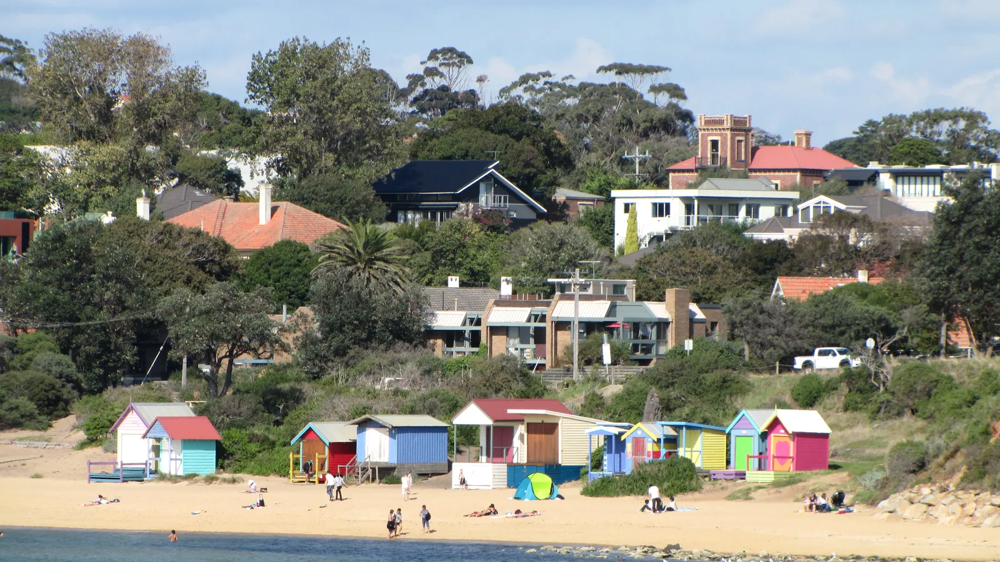

Long FramesReal places, observed details and one coherent editorial sequence.
04chapters
04photo studies
09drops
02release holds
Editorial programme
Four ways through October.
Each chapter resolves one practical choice. The month starts with a broad behavioural shift, then moves through culture, community and distance. Held items have a defined fallback instead of wishful copy.
Alan Travers · Wikimedia Commons · CC0
CHAPTER 01 · 1 TO 4 OCTOBERReady to commission
One more hour.
Where will I use the first longer evening?
Daylight saving begins on 4 October, just as school holidays end. Refresh the existing spring, late-afternoon walk and sunset material into three practical after-five plans with duration, access, parking, safety and weather alternatives.
TriggerClock change · 4 Oct
Content moveRefresh and consolidate
PhotographyLived late light, not postcard sky
Daniel Kabel · Wikimedia Commons · CC BY-SA 4.0 · Western Port context, not Coolart
CHAPTER 02 · 5 TO 11 OCTOBERAccess hold
Read the other coast.
Which Western Port Writes session and day suit me?
The organiser lists events on 9 to 11 October, but Parks Victoria currently lists Coolart Historic Area closed. The chapter releases only after current venue confirmation. If unresolved by 22 September, it becomes a Somers and Balnarring reading and picnic field guide with no Coolart access claim.
TriggerWestern Port Writes
GateCoolart access confirmation
FallbackWestern Port field guide

Simon Yeo · Wikimedia Commons · CC BY 2.0
CHAPTER 03 · 12 TO 18 OCTOBERReady with booking check
Keep the weekend.
Community walk, garden Sunday, or both?
The Main Street festival is cancelled. Say that once, then help readers plan a separate current weekend around Breast Foot Forward on Saturday 17 October and Mornington Botanical Rose Gardens High Tea on Sunday 18 October.
Trigger17 and 18 Oct
Traffic moveUseful cancellation redirect
PhotographyReal community and garden detail
Philip Mallis · Wikimedia Commons · CC BY-SA 4.0
CHAPTER 04 · 19 TO 25 OCTOBERPrimary event confirmed
The long finish.
Participating, supporting, or following the coast?
Lead with the confirmed 35 km Bloody Long Walk from Quarantine Station to Martha Cove. H&H at Stonier remains an optional note for existing ticket holders unless saleable inventory is confirmed.
TriggerBloody Long Walk · 25 Oct
Content moveRoute and support guide
Optional layerH&H after inventory check
Creative territory · Long Frames
Photography that observes.
These four compositions prove the visual grammar with existing rights-documented location images. They are art-direction studies, not final campaign masters. The final set should be captured or commissioned natively for horizontal, square and vertical use.
Peninsula Insider01 / OCT
One more hour
Use it well.
Three after-five plans for the first longer evening.
Peninsula Insider02 / OCT
Read the other coast
Bring the picnic.
Western Port in pages, water and a quieter horizon.
Peninsula Insider03 / OCT
Keep the weekend
Walk Saturday. Garden Sunday.
Two separate reasons to make a current Mornington plan.
Peninsula Insider04 / OCT
The long finish
Thirty-five kilometres of coast.
Join it, support it, or understand the route.
Image ruleEvery named place and event claim uses actual, rights-cleared photography. Abstract crops are welcome when they come from the real place. No generated location, venue, crowd or person.
Motion ruleCapture six to ten seconds of real movement beside every hero setup. Use restrained cuts, crops and type. Do not synthetically animate a still of a real location.
Proposed calendar · Australia/Melbourne
The month, staged.
Nine proposed drops across the website, newsletter, Instagram and Facebook. Nothing is scheduled. Every event item is rechecked within 72 hours of release.
Date
Chapter
Channel
Asset
Purpose
State
Thu 1 Oct
One more hour
Integrated
Month reveal and guide
Establish the system and plan the first longer evening
Carry Long Frames into useful site moments without reskinning Peninsula Insider. The homepage introduces the week's decision. What's On handles live access and booking status.
01 · Homepage campaign bandDiscover
peninsulainsider.com.au/
Peninsula InsiderEAT STAY WINE EXPLORE WHAT'S ON
OCTOBER · THIS WEEK'S DECISION
One more hour. Use it well.
Three current after-five plans, with access, timing and weather alternatives.
Open the field guide →
02 · What's On access insetDecide
peninsulainsider.com.au/whats-on/
Peninsula InsiderEAT STAY WINE EXPLORE WHAT'S ON
ACCESS CHECK · WESTERN PORT WRITES
Coolart is a live verification gate.
The organiser's programme and Parks Victoria's current closure notice conflict. Publish only after the venue is confirmed.
See evidence and fallback →
Photography provenance
Real images need real permission.
The published review page uses four existing PI library images with documented Wikimedia provenance. They are provisional direction studies. Final campaign photography still needs a capture or commissioning decision.
Western Port Writes lists Coolart sessions while Parks Victoria currently lists the area closed. Confirm before 22 September or use the fallback.
Hold 02 · Availability
H&H waitlist
The dates are current, but the public path emphasises a waitlist. Do not lead with a ticket CTA unless saleable inventory is verified.
Excluded · Cancelled
Emu Plains
The organiser marks 17 October cancelled. Exclude it despite stale third-party listings. Keep the Main Street festival cancellation explicit too.
Current approval boundary
Direction is ready. External release is not.
Approve the proposition and the actual-photography rule, then run a rights-cleared sourcing pass before commissioning only the remaining gaps. This review publication does not schedule, buy, license or publish any campaign content to Peninsula Insider, email or social channels.
.jpg){kind=link}
{kind=link}
{kind=link}
{kind=link}